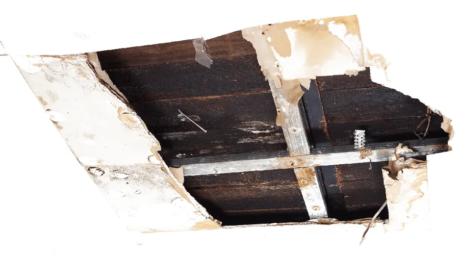
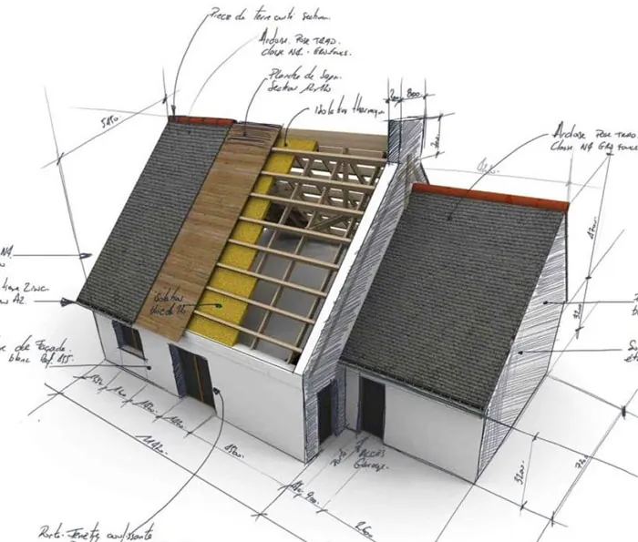

Moisture control is half our name for a reason. Our residential and commercial roofers in Salt Lake City have the knowledge and experience to find a waterproofing solution that fits each roof. Done right, waterproofing brings real benefits: lower roof costs over time, better energy efficiency, a longer roof life, and less maintenance caused by thermal shock.
Because we understand how all the roofing parts work together, we can respond to each roof's needs without overspending.
Where water gets into a roof
Most leaks start at a change: where two roof planes meet, where the roof meets a wall, or where something pokes through it. On flat roofs, water that sits in low spots will eventually find a seam.
| Trouble spot | Why it leaks |
|---|---|
| Flat and low-slope roofs | Ponding water, aging seams, worn membrane |
| Balconies and decks over rooms or garages | Water runs toward the house wall or through the deck surface |
| Wall and chimney transitions | Flashing pulls away or the sealant dries out |
| Valleys and eaves | Ice dams push meltwater up under the covering |
| Penetrations (vents, HVAC, skylights) | Boots and curbs crack in the sun and cold |

Why waterproofing pays for itself
Lower roof costs
A dry roof deck doesn't rot, and dry insulation doesn't need replacing. Catching water early is far cheaper than replacing sheathing and drywall later.
Energy efficiency
Wet insulation loses much of its value. Keeping it dry keeps your heating bill where it should be in January. Some systems also reflect sunlight; the Department of Energy's Guide to Cool Roofs explains how reflectance and emittance affect roof temperature.
Longer roof life
Every Utah winter puts a roof through one freeze-thaw cycle after another. Waterproofing keeps water out of the cracks where that cycle does the most damage.
Less damage from thermal shock
A dark roof can go from icy at dawn to hot by afternoon in spring. That fast swing stresses seams and flashing. The right waterproofing layer helps the roof move without opening up.
Waterproofing for homes and businesses
No matter how large or small, all roofs need maintenance and repair. Our crew covers every part of it, from roof repair to full restoration on all roof types. We can turn your workplace or home into a dry, comfortable space without leaks.
One homeowner had a leak around a balcony that ran into their garage. We came back and fixed it at no charge, in their words "in a professional, no-hassle manner." That's the kind of follow-through you should expect.
We also work with the same membrane materials on water features. Our pond liner work uses EPDM, PVC and other membranes, so we understand how they behave in Utah's climate.

How we approach a waterproofing job
Waterproofing only works if it goes where the water actually is. So we start by finding the path, not by picking a product.
- Trace the water. We follow stains, wet insulation and soft decking back to the point where water gets in.
- Check what's underneath. Wet or rotten decking and soaked insulation get replaced first. Sealing over them just traps the moisture.
- Match the system to the roof. A balcony, a flat commercial roof and a valley on a shingle roof each need a different approach.
- Detail the transitions. Walls, curbs, drains and penetrations get the most attention, because that's where most leaks start.
- Stand behind it. If something isn't right afterwards, call us and we'll come back and make it right.
Some leaks turn out to be a ventilation or ice-dam problem rather than a waterproofing one. If that's the case, we'll tell you, and fix the cause instead of selling you a coating.
Waterproofing questions
What does roof waterproofing do?
Waterproofing adds a continuous barrier that keeps water out of the roof system. It stops leaks, protects the deck and insulation, and can reduce maintenance caused by thermal shock, the stress of a roof heating and cooling fast. It also helps a roof last longer.
Is waterproofing only for flat roofs?
No. Flat and low-slope roofs need it most, but balconies, decks over living space, valleys and wall transitions on pitched roofs benefit too. We look at where water actually collects on your building and waterproof those areas.
Can waterproofing save energy?
Yes. Wet insulation doesn't insulate well, so keeping it dry helps your heating and cooling work as designed. Some waterproofing systems are also reflective, which can cut heat gain in summer. We'll explain the options that fit your roof.
How do I know if my roof needs waterproofing?
Common signs are leaks that return after a patch, water stains near walls or balconies, ponding water on a flat roof that's still there two days after a storm, and blistered or cracked roof coatings. If you see any of these, have the roof looked at before winter freeze-thaw makes them worse.
Do you waterproof homes and commercial buildings?
Both. We waterproof residential and commercial roofs in Salt Lake City and Park City, from a single leaking balcony over a garage to a full commercial flat roof. Every roof, large or small, needs maintenance and repair at some point.